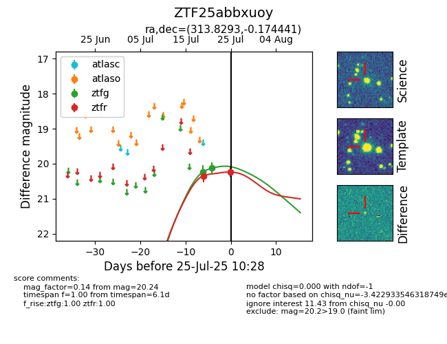

Target ZTF25abbxuoy at 2025-07-25 10:28, see:
FINK: fink-portal.org/ZTF25abbxuoy
Lasair: lasair-ztf.lsst.ac.uk/objects/ZTF25abbxuoy
ALeRCE: alerce.online/object/ZTF25abbxuoy
alt names
ZTF25abbxuoy (ztf,fink)
coordinates:
equatorial (ra, dec) = (313.8293,-0.17444)
galactic (l, b) = (48.0680,-27.34594)
photometry
last ztfg=20.13, ztfr=20.24
2 ztfg, 2 ztfr detections
